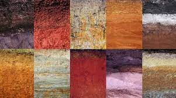
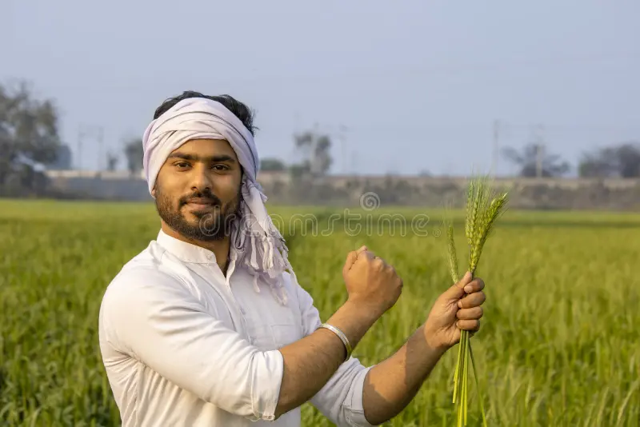
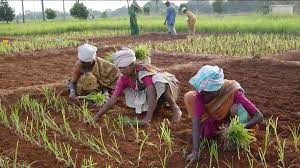
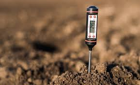

About Soil

Soil health is the cornerstone of successful agriculture. It plays a pivotal role in ensuring the growth and productivity of crops. Healthy soil is characterized by its richness in nutrients, teeming with beneficial microorganisms, and having excellent physical structure.
Soil is not merely a medium for plant growth; it is a dynamic, living ecosystem. It supports an intricate web of organisms, from earthworms to microscopic bacteria, all contributing to its overall health. These organisms aid in nutrient cycling and decomposition of organic matter, creating an environment that fosters robust plant growth.
Monitoring soil health is of utmost importance for sustainable farming practices. Understanding the conditions of your soil is the first step in making informed decisions about crop management and land use. Soil testing is an essential tool in assessing its health, providing data on nutrient levels, pH, and other critical indicators.
As we delve deeper into the world of soil health, we'll explore key indicators such as soil pH, nutrient levels, organic matter content, and microbial activity. Additionally, we'll discuss the importance of regular soil testing and how it enables you to make precise choices regarding fertilization and soil amendments, ultimately leading to healthier and more productive soil.
Farming Tips

Optimal soil health practices include crop rotation, organic matter addition, proper irrigation, and pH management. Ensure to test your soil regularly to assess its health.
Weather and Soil

Understand the impact of weather patterns on soil health and how to adapt your farming practices accordingly.
Weather conditions such as temperature, rainfall, and humidity can significantly influence soil health. It's important to be aware of these factors and make adjustments to your farming techniques to optimize soil health and crop production.
Common Problems Faced by Farmers

Farmers often encounter various challenges when it comes to soil health and agriculture. Here are some common problems:
- Poor Soil Fertility: Nutrient-depleted soil can lead to decreased crop yields.
- Soil Erosion: Erosion can wash away valuable topsoil, impacting soil health.
- Weed Infestations: Weeds compete with crops for nutrients and water.
- Pest and Disease Outbreaks: Pests and diseases can damage crops and reduce yield.
- Unsuitable pH Levels: Extremes in soil pH can limit nutrient availability to plants.
- Water Scarcity: Insufficient irrigation affects crop growth and soil moisture.
- Soil Compaction: Compacted soil reduces root growth and water infiltration.
- Lack of Organic Matter: Soil with low organic matter has poor structure and nutrient-holding capacity.
Addressing these problems requires good agricultural practices, soil testing, and expert advice.
Doubts not resolved Chat with our Chatbot